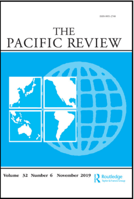

收录于合集

作品简介
【作者】
Lukas Maximilian Mueller，德国弗莱堡大学政治科学系国际政治助理研究员，也是德国埃尔福特大学比较政治系的助理研究员。
【编译】 晋玉（国政学人编译员，武汉大学边海院）
【校对】 李雯珲、樊华
【审核】 丁伟航
【排版】 陈育涵
【美编】 聂涵琳
【来源】 Mueller, L. M. (2020). Challenges to ASEAN centrality and hedging in connectivity governance—regional and national pressure points. The Pacific Review, 1-31.
期刊简介

《太平洋评论》（The Pacific Review）是太平洋地区研究的主要平台，作为跨学科期刊，其宗旨和目标为打破研究领域之间以及学术界、新闻界、政府和商界之间的壁垒。据Journal Citation Reports统计,2019年该刊的影响因子为1.633，在区域研究类SSCI期刊中排名11，在国际关系类SSCI期刊中排名第35。
互联互通治理中东盟中心地位
和对冲战略面临的挑战
——区域层面和国家层面面临的压力
Challenges to ASEAN centrality and hedging in connectivity governance—regional and national pressure points
Lukas Maximilian Mueller
内容提要
自2010年起，东盟为加强区域的互联互通，开始着力增强其在基础设施建设工作中的一致性和可视性。2016年最新出台的《东盟互联互通总体规划2025》（MPCA 2016）就体现了这一现象，MPCA 2016更加凸显了东盟的重点日程，其中包括滚动优先项目管道（rolling priority project pipeline）计划。同时MPCA 2016也强调了对东盟的机制创新，其中包括建设一个新的政策协调机制。尽管如此，在加强互联互通的过程中，东盟在保持一致性方面仍面临一些问题。这些问题不仅来源于其内部成员，也来自于其对话伙伴。本文利用“中心地位”（centrality）和“对冲”（hedging）这两个概念着重分析东盟在加强互联互通过程中对外部资源的调动和管理。本文发现东盟对资源的依赖再加上其在建设东盟中心地位一事上的失利共同导致了分别出现于区域和国家层面的问题。区域层面，东盟中心地位的缺失和ASEAN+1关系的存续致使外部国家围绕东盟互联互通议程和相关东盟制度框架展开竞争。国家层面，东盟成员国在实施对冲战略时未能在区域远景上达成一致，这也突出了东盟内部缺乏一致性的问题。外部成员围绕东盟的制度框架在国家层面的持续竞争进一步强化了东盟在互联互通治理工作中的不一致性，从而又进一步削弱了东盟的中心地位。东盟在加强互联互通过程中努力确保和维护其中心地位，积极实施避险战略，这象征着东盟试图将触角延伸到新的政策领域，但同时也预示着其在治理工作中会持续面临一些制约因素。
文章导读
01
开篇引言
2010年东盟提出《东盟互联互通总体规划》（MPCA 2010）以加强东盟内部互联互通水平，为关键领域开通投资通道，被视为区域组织的分水岭。但2010年提出的这一规划也因缺乏执行力，被戏称为“愿望清单”。
2016年东盟提出一项新的《东盟互联互通总体规划》（MPCA 2016），该规划更加坚定了全球互联互通的，其中尤其注重基础设施的建设，因此本⽂着重研究有关基础设施建设的相关政策。
自提出MPCA 2016已经过去了4年的时间，但该规划的落实情况仍不能达到预期水平。东盟各成员国无法依靠自己而只能依靠外部为其互联互通规划提供资源是造成以上结果的其中一个重要原因。尽管该规划在东盟内部进展受限，东盟互联互通话题却对东盟对话伙伴充满了吸引力。自MPCA 2010开始，就有不同的国家和国际组织围绕着该规划组织了众多的会议、论坛,制定战略规划，签署有关协议，其中不仅包括中国的“一带一路”倡议（BRI）和日本的高质量基础设施合作伙伴关系（PQI），也包含美国、欧盟、印度等其它权力的相关活动。
以上现象正好说明 在互联互通问题上东盟内部的制度安排（institutional arrangement）和外部国家/组织（external relations）存在密切关系。 MPCA在着力为东盟成员国设定议程的同时，也致力于维护东盟在竞争的环境中的中心地位。东盟中心地位，尤其是在安全和贸易方面的中心地位是东盟制度安排中的突出特征，而对冲也被视为东盟国家处理多个外部国家/组织利益关系的优选战略。本文认为 在确立、维护东盟中心地位和各东盟成员国的对冲战略就像一个硬币的正反两面，两者共同组成东盟外部资源依赖管理机制这枚硬币。 事实上，东盟的中心地位会对对冲战略产生抵消作用，以此在有争议的政策领域中确保制度一致性。
本文认为 东盟中心地位和对冲战略都根植于资源依赖理论 ，故本文试图把这两个概念置于一个前所未有的统一的理论框架下，来研究基础设施互联互通这个新政策领域，以解答 为什么即使在制度创新上作出了努力，但东盟仍旧在区域互联互通问题上受阻 这一问题。在回答这一最终的问题前，本文仍需解决如下几个问题：
1.东盟的中心地位战略和对冲战略是如何在互联互通问题上影响区域内部治理和外部关系？
2.这两个战略是如何实施的？
3.这些战略成功推动了东盟未来的议程吗？
本文的论述也将围绕这几个问题展开。
01
东盟的中心地位、对冲、资源依赖和互联互通治理
东盟区域合作的一个关键特点是 对包括中、美、日、澳、印度和欧盟在内的域外各方进行管理。 在分析这一问题时，主要会涉及东盟中心理论和对冲理论。如上所述，本文假设东盟中心地位和对冲是同一个硬币的两面，一起组成了东盟管理外部环境资源依赖的方法。
根据资源依赖理论， 如果组织不能为自己提供必要的资源，组织就会和外部环境进行互动，由此产生外部依赖。 资源依赖可能会让组织在不对称的关系中形成不平衡的相互依赖，这迫使这些组织实施一些特定战略来管理这些关系，中心地位和对冲战略就是其中的两个例子。
东盟在资源依赖理论中的中心地位出自梅利·安东尼（Mely Caballero-Anthony），她认为，根据 社会网络学 理论，东盟需要与区域内的其它权力建立密切联系并且与它们交换资源和信息，这是巩固东盟中心地位的基础。而东盟的中心地位也可能产生阻止参与东盟框架的其它国家/组织将资源工具化（即利用资源控制东盟）的效果。
相比东盟中心地位而言，对冲研究中与资源依赖源相关的成果比较明显。郭清水（Kuik）的传统对冲框架假设，各国在安全合作中采取两种矛盾的战略，以最大限度地减少外部环境风险和最大限度地利用外部关系带来的利益：风险- 应急选择（risk-contingency options）和收益最大化选择。Jurgen Haacke提供了三个指标来明确识别对冲策略：风险感知、增强措施在本质上是防御性还是进攻性，以及一致性信号的模糊程度，这反映了资源依赖管理策略的动态性。John Ciorciari认为小国缺乏资源是采用对冲策略的根本原因。
上述概述强调了中心地位和对冲与资源依赖理论的关系，说明这两种战略都可被视为 确保东盟及其成员国的首要地位、尽量减少外部环境中的资源风险的战略。 此外，这两个概念是紧密相连的。这不仅反映在“它们共同组成了东盟资源管理的战略”，而且体现在“两个战略的成功实施需要相辅相成、相互依赖” 这一事实上。其中特别是单个东盟成员国对冲策略的应用，在很大程度上依赖于东盟的中心地位的确认和维持。
在互联互通治理中，东盟的中心地位采用梅利·安东尼（Mely Caballero- Anthony）的定义，将中心地位分为两层含义——东盟内部的中心地位（centrality within）和东盟在其区域环境中的中心地位（centrality of）。东盟内部的中心地位意味着东盟成员国之间的紧密联系。东盟内部的一致性通过使该组织能够“ 获得资源、设置议程、组织辩论和制定有利于其成员国的政策 ”而促成中心地位。 东盟在其区域环境中的中心地位是东盟与其合作伙伴不断形成密切关系和不断进行资源、信息交换的产物。 在此框架下，本文认为东盟为管理其资源依赖而建立的机制既与它的内部制度安排有关，也与它和外部国家/组织的关系有关。
郭清水（Kuik）风险-应急选择和收益最大化选择的对冲理论框架适合运用到对东盟互联互通治理的分析中。Kuik提出三个分析指标： 坚持在相互竞争的势力中不选边、采取对抗措施的实践以及在使用工具来保持收益的同时策划预备方案。 值得注意的是，Kuik对约束性接触（binding engagement）和拒绝支配（dominance denial）的概念化也反映了东盟中心地位的概念，因为这两种战略的执行都假定使用制度来接触和控制外部力量。
02
东盟的互联互通治理
表面上，与MPCA 2010相比，东盟现行的互联互通规划涉及的内容更多、范围更广，但实际上东盟在其组织内对互联互通概念的应用倾向于经济，其中基础设施互联互通更是东盟整个互联互通规划的重点，而较少关注于社会文化或政治安全领域。虽然总体规划包括15项倡议，但其中大多数仍处于拟订阶段。只有作为总体规划的主要可交付成果之一的滚动 优先项目管道计划 （rolling priority project pipeline）取得了显著进展，其目的是在寻求投资前根据贸易利益以及经济可行性标准评估东盟成员国提交的基础设施项目。该计划被称为该规划的“核心”，这是因为该计划被赋予了机制作用——东盟能通过这个机制为互联互通规划的实施调动从其对话伙伴手中得到的资源。
这突出了 互联互通规划作为资源依赖管理策略的功能 。首先，该规划为东盟成员国提供了增强内部一致性的议程，同时也为东盟的外部环境确立了议程以及相关的制度机制，从而确立了东盟的中心地位。这种双重议程设置功能包含在梅利·安东尼（Mely Caballero-Anthony ）关于东盟在区域环境中的中心地位（centrality of）和东盟内部中心地位（centrality within）的两个视角中。在东盟内部，互联互通总体规划应被视为一份旨在巩固区域愿景、确保东盟成员国间一致性的文件。在东盟之外，总规划是加强东盟中心地位、助力调动外部资源和减少外部国家/组织进行机制竞争风险的工具。然而，由于无法通过引入治理机制来实现内部一致性，东盟在这两个进程中都遇到困难。这又导致了东盟缺乏有效吸引外部国家/组织的机制形式。因此，对于互联互通而言，无论是东盟内部的中心地位（centrality within），还是东盟在区域中的中心地位（centrality of）都受到了威胁。
就互联互通治理而言，由于东盟在维护中心地位问题上的失利，东盟在区域范围内和国家范围内都即将会面临压力。
03
**** 区域层面的压力 ****
根据资源依赖理论， 缺乏对外部依赖的管理可能会减损组织的自主性和制度的功能性 （institutional performance）。外部国家/组织对东盟互联互通工作的参与可以分为三类（1）不参与，即没有提供资源，因此不发生相互作用；（2）合作，提供资源支持东盟的目标和制度；（3）竞争，提供资源支持外部国家/组织的目标和制度。
实际上，对于互联互通而言，并非东盟的所有对话伙伴都参与了资源交换。加拿大、新西兰、俄罗斯并没有提到支持东盟的互联互通议程；澳大利亚、印度、韩国很大程度上通过“合作”的形式参与了东盟的互联互通规划。
相较于不参与和合作的情况，竞争的参与方式更能说明东盟在互联互通治理中的不足（governance constraints），是互联互通治理的区域层面压力点的真正特征。中国、美国、日本、欧盟这四个外部国家/组织主要通过以下两种方式与东盟的互联互通议程形成竞争：1.针对东盟互联互通规划的目标，设定其它优先事项或议程；2.利用替代制度，边缘化东盟。
东盟无力应对这些“竞争者”带来的挑战，这主要基于以下原因：首先，东盟需要依靠这些国家的资源为其互联互通计划提供资金；其次，如上分析，东盟的中心地位难以维持；最后，东盟在处理多边问题时主要依赖ASEAN+1关系（并不能提供其它有效制度）。 这促使东盟只能被迫参与或接触这些国家的相应战略，以期对方能把其目标修改得与东盟目标相符相适。
04
国家层面的压力
本文分析了东盟十国在建设互联互通方面的行为，分析表明大多数东盟成员国在互联互通方面都释放了明显的对冲信号。此外，东盟成员国通过这些对冲策略，从多个外部国家/组织中获得推进本国互联互通计划的资源。需要强调的是东盟成员国的这种个别对冲并非总是良性的，有时会对东盟内部的连通性产生负面影响。例如，老挝借助外来资金而得以兴建的大规模水力发电设施不仅不是MPCA 2016的一部分内容，甚至还对湄公河沿岸的其他国家产生了不良影响。此外，从老挝提交到东盟的互联互通计划来看，其优先项目是道路建设，然而老挝还是在继续寻求水电投资，这说明外部资源提供者有意或无意的影响了东盟互联互通计划的优先事项。再者，正如对冲理论所说的，东盟成员国确实利用多边机制与外部国家/组织保持接触并一定程度上阻止了外部国家/组织在本国建立主导地位，但他们利用的并不是东盟框架下的制度，而是外部国家/组织自己构建的多边机制，如“一带一路”和高质量基础设施伙伴关系（PQI）。
与东盟类似，许多东盟成员国强烈依赖外部资源来推进其互联互通议程。东盟成员采取对冲战略以避免拥有资源的外部国家/组织处于主导地位。虽然它们各自的对冲策略都很成功，但整个东盟成员国的对冲行为并不一致。由于区域互联互通只能通过整体来实现，所以不符合区域互联互通战略的国家的选择就可能对东盟产生分裂效应。这很大程度上仍是由东盟在互联互通方面缺乏中心地位而造成的。
05
结论
在互联互通问题上，东盟试图确立其在东盟成员国内部及在区域的中心地位。东盟需要依赖外部各方提供资源，根据资源依赖理论，东盟试图通过建立对话伙伴接触机制来管理为其提供资源的外部国家/组织。然而这一机制仅延续了ASEAN+1的模式而并没能提供多边解决方案。这导致东盟无法在互联互通问题上确立或维持中心地位，从而进一步导致了东盟在区域和国家层面上都面临压力。
就区域而言，中、日、美、欧盟这四个外部国家/组织通过提出不同互联互通目标和建立不同的制度与东盟的互联互通规划形成了竞争的局势。国家层面，无法从东盟得到足够资源资助的东盟成员国只能寻求外部国家/组织的资源支持，为避免外部国家/组织的主导地位，大多数东盟成员国采取了对冲战略。但它们主要通过“一带一路”或高质量基础设施伙伴关系（PQI）等相互竞争的外部国家/组织涉及的制度框架来进行对冲。
总的来说，东盟在互联互通方面缺乏中心地位，因此导致了竞争机制的出现，限制了东盟成员国的对冲选择。在加上它们对资源的持久依赖，这些相互竞争的机制反过来又迫使东盟以及东盟成员国参与其中。
仅通过单个成员国的对冲战略管理对外部资源依赖，这可能会获得暂时的成功，但这种成功显然并不能长久。东盟在互联互通方面的内外治理安排，无论是对东盟成员国还是对外部行为体，都没有提供足够的价值以确保其制度优势。因此，东盟必须建立一个多边机制使其能筛选出与东盟互联互通远景相符的项目。滚动优先项目管道（rolling priority project pipeline）计划是很好的一步棋，但显然，仅仅这样并不足以实现东盟的互联互通的愿景。
译者评述
译者认为该篇文章十分具有启发意义，值得学习和思考。
就整篇文章的分析框架而言，作者实现了资源依赖理论框架下“中心地位”和“对冲战略”的理论统一。这篇文章花费较多篇幅建构了一个新的理论框架来解释以东盟无力推进本组织互联互通战略的原因。作者构建该理论框架的基本逻辑如下： 作者首先挖掘“中心地位”和“对冲战略”这两大常用于东盟地区问题的分析工具的连接点 。在分析得出两者可以以 外部资源依赖理论 进行连结之后，作者再以此为基础把中心地位和对冲战略两个独立的分析框架置于外部资源依赖理论的框架之下形成一个新的理论框架。正如作者自己所言“本研究证明了资源依赖理论对解释东盟对外关系的价值。对冲战略和中心地位可以被视为另一个更深层次机制的两个概念表述——东盟对外部资源依赖的管理。这种方法不仅对中心地位或对冲战略的未来研究有很大帮助，而且可能对东盟的其他现象也有帮助，例如嵌套式机构（nested institution）、政府间工作组的激增以及东盟战略计划的稳定产出。”东南亚地扼大国利益交织的战略要冲地位，资源丰富，市场广阔，是崛起国与主导国进行较量的场所。【1】包括美国、欧盟、澳大利亚、印度、中国、日本等越来越多的政治力量不断涌入东盟，东盟地区如何处理其与外部的关系，如何在各大权力之间周璇，这是东盟地区各国面临的首要议题。同时各大外来力量如何处理好与该区域本土国家的关系，如何与该区域的其它外来国家进行“斗争”也是值得关注的问题，这个新的分析框架似乎可为研究、解释相关问题打开新的思路。此外，就利用“中心地位”研究东盟问题来讲，大致浏览关于东盟“中心地位”的研究，可以发现已有文献主要集中于回答东盟的中心地位是什么、怎么形成的、有什么作用、东盟的中心地位能否保持等问题。这些文献无疑为东盟中心地位的研究奠定了基础，但本文关于东盟中心地位的研究着眼于“互联互通”这一个具体的政策领域，分析东盟是否在互联互通这一个具体的政策领域确立、保持住了其中心地位以及如何在该具体政治领域确立、保持其中心地位。这似乎在启发研究者对其它政策领域开展类似的研究。
就文章的主题来说，本文主要以大国竞争为背景下，从东盟自身的角度分析东盟在互联互通建设上面临的挑战。其中包含的“大国在东盟地区的基础设施建设竞争这个话题”值得一谈，因为基础设施建设对地缘政治与国际安全的影响成为国际关系学界关注的重点议题这是近年来的重点议题。【2】有学者认为各方在东盟地区在基础设施建设问题上的斗争实则是各大国在东盟这个特定地区对影响力与领导权的竞逐。【3】那么各个国家具体是通过什么样的方式进行竞争呢？通过文章可以了解到外部各方在与东盟竞争时， 主要是通过构建新的制度和设立与东盟不同的互联互通目标来实现对东盟在该问题上中心地位的挑战。 这些由域外大国支持的具有替代性的制度在亚太地区不断的激增现象被学者称为竞争性多边主义（contested multilateralism），并被认为具有边缘化东盟、取代以往以东盟为中心的制度秩序以及作为支持国家利益延伸的制度工具的作用。【4】就基础设施建设问题而言，本文认为 “东盟难以确立或维持中心地位再加上东盟现有制度的无力，促使东盟只能被迫参与或接触这些国家的相应战略以期对方能把其目标修改得与东盟目标相符相适”。 在这样的情况下，是否可以得出这样的结论：东盟在互联互通问题上的中心地位最终会瓦解？因为基于以上结论，东盟为了实现自己的计划不断被迫接触其它替代制度，替代制度不断产生边缘化东盟的作用，这似乎就会形成了一个对东盟不利的循环。这样的趋势是否会延续到其它领域？如果会，将会为区域秩序带来怎样的影响？“让这些替代制度成为东盟补充制度”【5】的可能性，是否只会在东盟被迫接受的情况下出现？这似乎值得深入研究。
参考文献：
[1]刘阿明.权力转移过程中的东南亚地区秩序——美国、中国与东南亚的角色[J].世界经济与政治,2009(06):38-46+4.
[2] [3]毛维准.大国基建竞争与东南亚安全关系[J].国际政治科学,2020,5(02):109-147.
[4][5] He, K. (2019). Contested multilateralism 2.0 and regional order transition: Causes and implications. The Pacific Review, 32(2), 210–220.

文章观点不代表本平台观点，本平台评译分享的文章均出于专业学习之用, 不以任何盈利为目的，内容主要呈现对原文的介绍，原文内容请通过各高校购买的数据库自行下载

添加 “国小政”微信，获取最新资讯


好好学习，天天“在看”

国政学人
支持学术公益与知识传播
微信扫一扫赞赏作者 __赞赏
已喜欢，对作者说句悄悄话
取消 __
发送给作者
发送
最多40字，当前共字
上一页 1/3 下一页
长按二维码向我转账
支持学术公益与知识传播
受苹果公司新规定影响，微信 iOS 版的赞赏功能被关闭，可通过二维码转账支持公众号。